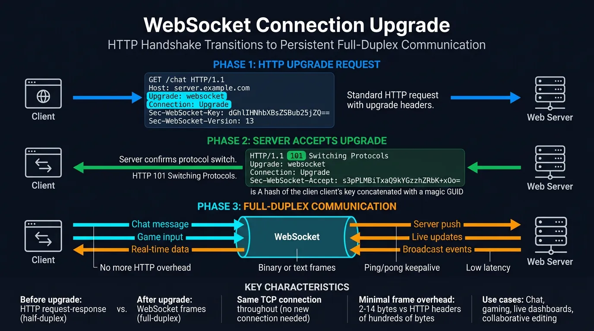
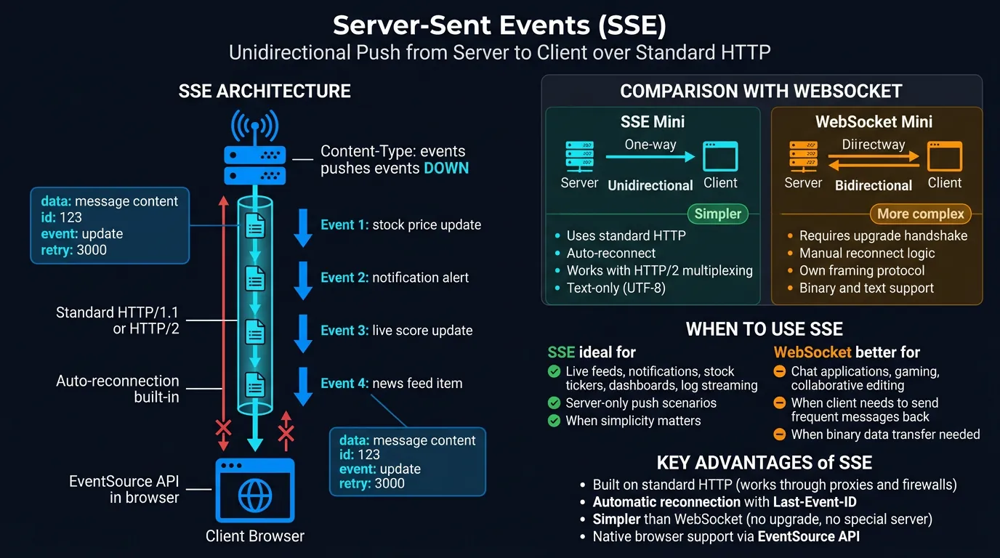
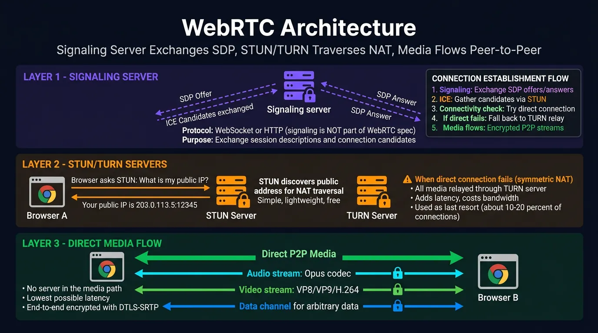
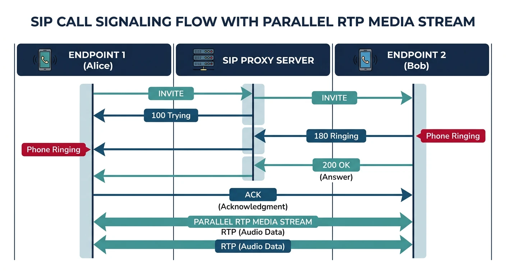
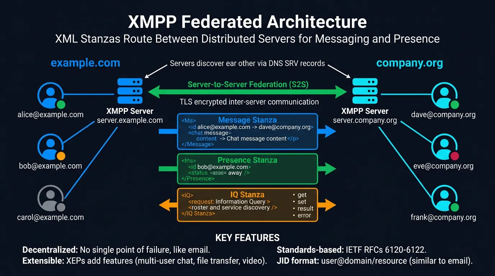

Complete Protocols Master Part 11: Real-Time Protocols
January 31, 2026Wasil Zafar40 min read
Master real-time communication: WebSockets for bidirectional messaging, WebRTC for peer-to-peer video, SIP/RTP for VoIP, and XMPP for chat applications.
HTTP's request-response model doesn't work for real-time applications. When you need instant updates—chat messages, live scores, video calls—you need protocols designed for bidirectional, low-latency communication.
Series Context: This is Part 11 of 20 in the Complete Protocols Master series. Real-time protocols operate at the Application Layer, often building on TCP (WebSockets), UDP (RTP), or both (WebRTC).
# Real-time vs Request-Response
# HTTP: Request-Response
# Client: "Any new messages?"
# Server: "No"
# (1 second later)
# Client: "Any new messages?"
# Server: "No"
# (Polling wastes bandwidth, adds latency)
# WebSocket: Bidirectional
# Client: "Open connection"
# Server: "Connected"
# Server: "New message: Hello!" (instant push)
# Client: "Send: Hi back!"
# (Connection stays open)
# Key differences:
comparison = {
"HTTP Polling": {
"connection": "Open, close, repeat",
"latency": "High (request interval)",
"bandwidth": "High (headers each time)",
"bidirectional": False
},
"WebSocket": {
"connection": "Persistent",
"latency": "Low (instant)",
"bandwidth": "Low (minimal framing)",
"bidirectional": True
}
}
for proto, features in comparison.items():
print(f"\n{proto}:")
for key, value in features.items():
print(f" {key}: {value}")
WebSockets
WebSockets (RFC 6455) provide full-duplex communication over a single TCP connection. They're the foundation of real-time web applications—chat, gaming, live updates.

WebSocket connection upgrade: HTTP handshake transitions to persistent full-duplex communication
Handshake
WebSocket Connection Upgrade
WebSocket starts as HTTP, then upgrades:
CLIENT REQUEST:
GET /chat HTTP/1.1
Host: server.example.com
Upgrade: websocket
Connection: Upgrade
Sec-WebSocket-Key: dGhlIHNhbXBsZSBub25jZQ==
Sec-WebSocket-Version: 13
SERVER RESPONSE:
HTTP/1.1 101 Switching Protocols
Upgrade: websocket
Connection: Upgrade
Sec-WebSocket-Accept: s3pPLMBiTxaQ9kYGzzhZRbK+xOo=
After this handshake:
• No more HTTP headers
• Binary framing only
• Full-duplex communication
• Either side can send anytime
# WebSocket server with Python (websockets library)
async def websocket_server_example():
"""WebSocket server demonstration"""
print("WebSocket Server Example")
print("=" * 50)
print("""
import asyncio
import websockets
# Store connected clients
clients = set()
async def handler(websocket, path):
# Register client
clients.add(websocket)
try:
async for message in websocket:
print(f"Received: {message}")
# Broadcast to all clients
for client in clients:
if client != websocket:
await client.send(f"User said: {message}")
finally:
clients.remove(websocket)
# Start server
async def main():
async with websockets.serve(handler, "localhost", 8765):
print("WebSocket server running on ws://localhost:8765")
await asyncio.Future() # Run forever
asyncio.run(main())
""")
print("\nInstall: pip install websockets")
asyncio.run(websocket_server_example()) if 'asyncio' in dir() else websocket_server_example()
// WebSocket client (JavaScript)
// Browser WebSocket API
const socket = new WebSocket('wss://server.example.com/chat');
// Connection opened
socket.addEventListener('open', (event) => {
console.log('Connected!');
socket.send('Hello Server!');
});
// Listen for messages
socket.addEventListener('message', (event) => {
console.log('Message from server:', event.data);
});
// Connection closed
socket.addEventListener('close', (event) => {
console.log('Disconnected');
});
// Handle errors
socket.addEventListener('error', (error) => {
console.error('WebSocket error:', error);
});
// Send message
function sendMessage(text) {
if (socket.readyState === WebSocket.OPEN) {
socket.send(text);
}
}
// Close connection
function disconnect() {
socket.close();
}
SSE provides one-way server-to-client streaming over HTTP. Simpler than WebSockets when you only need server push (notifications, live feeds).

Server-Sent Events: unidirectional push from server to client over standard HTTP
SSE vs WebSocket
When to Use SSE
SSE Advantages:
• Simpler than WebSocket
• Works over HTTP/2 (multiplexing)
• Auto-reconnection built-in
• Event IDs for resume after disconnect
SSE Limitations:
• One-way only (server → client)
• Text data only (no binary)
• Limited connections per browser (6 HTTP/1.1)
Use SSE for:
✅ Live scores
✅ News feeds
✅ Notifications
✅ Stock tickers
Use WebSocket for:
✅ Chat (bidirectional)
✅ Gaming (low latency)
✅ Collaborative editing
# SSE server with Python (Flask)
from flask import Flask, Response
import time
app = Flask(__name__)
def generate_events():
"""Generator for SSE events"""
count = 0
while True:
count += 1
# SSE format: data: message\n\n
yield f"data: Event {count} at {time.strftime('%H:%M:%S')}\n\n"
time.sleep(1)
@app.route('/events')
def events():
return Response(
generate_events(),
mimetype='text/event-stream',
headers={
'Cache-Control': 'no-cache',
'Connection': 'keep-alive'
}
)
# Run: flask run
# Client connects to /events and receives stream
WebRTC (Web Real-Time Communication) enables peer-to-peer audio, video, and data directly between browsers—no plugins needed. Powers video calls, screen sharing, and file transfer.

WebRTC architecture: signaling server exchanges SDP, STUN/TURN traverses NAT, media flows peer-to-peer
P2P But Needs Servers: WebRTC is peer-to-peer for media, but still needs: (1) Signaling server to exchange connection info, (2) STUN/TURN servers to traverse NAT/firewalls.
Architecture
WebRTC Connection Flow
WebRTC Connection Steps:
1. SIGNALING (via WebSocket/HTTP)
• Exchange SDP (Session Description Protocol)
• Describes media capabilities
2. ICE CANDIDATE GATHERING
• STUN: Discover public IP/port
• TURN: Relay if direct P2P fails
3. ICE CONNECTIVITY CHECKS
• Try all candidate pairs
• Select best path (usually direct P2P)
4. DTLS HANDSHAKE
• Secure the connection
• Exchange encryption keys
5. MEDIA/DATA FLOW
• SRTP for audio/video (encrypted RTP)
• SCTP for data channels
STUN vs TURN:
STUN: "What's my public IP?" (cheap, just discovery)
TURN: "Relay my traffic" (expensive, when P2P fails)
// WebRTC peer connection example
// Create peer connection
const config = {
iceServers: [
{ urls: 'stun:stun.l.google.com:19302' },
{
urls: 'turn:turn.example.com',
username: 'user',
credential: 'pass'
}
]
};
const pc = new RTCPeerConnection(config);
// Handle ICE candidates
pc.onicecandidate = (event) => {
if (event.candidate) {
// Send candidate to peer via signaling server
sendToSignaling({ type: 'candidate', candidate: event.candidate });
}
};
// Handle incoming tracks (audio/video)
pc.ontrack = (event) => {
document.getElementById('remoteVideo').srcObject = event.streams[0];
};
// Add local media
async function startCall() {
const stream = await navigator.mediaDevices.getUserMedia({
video: true,
audio: true
});
// Show local video
document.getElementById('localVideo').srcObject = stream;
// Add tracks to peer connection
stream.getTracks().forEach(track => pc.addTrack(track, stream));
// Create and send offer
const offer = await pc.createOffer();
await pc.setLocalDescription(offer);
sendToSignaling({ type: 'offer', sdp: offer });
}
// Handle incoming offer
async function handleOffer(offer) {
await pc.setRemoteDescription(new RTCSessionDescription(offer));
const answer = await pc.createAnswer();
await pc.setLocalDescription(answer);
sendToSignaling({ type: 'answer', sdp: answer });
}
// Handle incoming answer
async function handleAnswer(answer) {
await pc.setRemoteDescription(new RTCSessionDescription(answer));
}
// Handle incoming ICE candidate
async function handleCandidate(candidate) {
await pc.addIceCandidate(new RTCIceCandidate(candidate));
}
Data Channels
WebRTC for Data (Not Just Video)
// WebRTC Data Channels: P2P data transfer
const pc = new RTCPeerConnection(config);
// Create data channel (initiator)
const dataChannel = pc.createDataChannel('chat', {
ordered: true, // Guarantee order
maxRetransmits: 3 // Reliability
});
dataChannel.onopen = () => {
console.log('Data channel open');
dataChannel.send('Hello peer!');
};
dataChannel.onmessage = (event) => {
console.log('Received:', event.data);
};
// Handle incoming data channel (responder)
pc.ondatachannel = (event) => {
const channel = event.channel;
channel.onmessage = (e) => console.log('Received:', e.data);
};
// Use cases:
// • P2P file transfer (no server storage!)
// • Low-latency gaming
// • Collaborative editing
SIP & RTP: VoIP Protocols
SIP (Session Initiation Protocol) handles call signaling—ringing, answering, hanging up. RTP (Real-time Transport Protocol) carries the actual audio/video.

SIP handles call setup signaling while RTP carries the actual audio/video media stream
SIP Basics
SIP Call Flow
SIP Call Setup:
Alice Server Bob
| | |
|------ INVITE ------>| |
| |------ INVITE ------>|
| |<----- 180 Ringing --|
|<---- 180 Ringing ---| |
| |<----- 200 OK -------|
|<---- 200 OK --------| |
|------- ACK -------->| |
| |------- ACK -------->|
| | |
|<========== RTP Media Flow =============>|
| | |
|------- BYE -------->| |
| |------- BYE -------->|
| |<----- 200 OK -------|
|<---- 200 OK --------| |
SIP Methods:
INVITE - Start call
ACK - Confirm INVITE
BYE - End call
CANCEL - Cancel pending INVITE
REGISTER - Register with server
OPTIONS - Query capabilities
XMPP (Extensible Messaging and Presence Protocol) is an open standard for instant messaging, presence, and multi-user chat. Used by WhatsApp (modified), Google Talk, and many enterprise chat systems.

XMPP federated architecture: XML stanzas route between distributed servers for messaging and presence